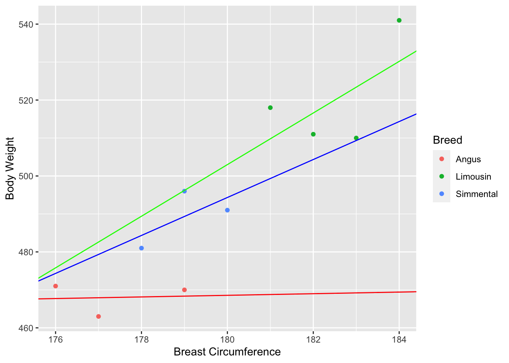
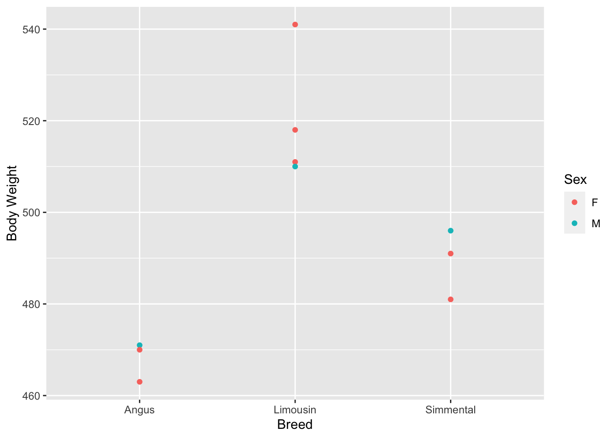

Interactions
Definition
- Effect of given predictor variable depends on level or value of other predictor variable
- Examples:
- Regression of
Body WeightonBreast Circumferenceis different for different breeds - Effect of
BreedonBody Weightis different for different male and female animals
- Regression of
Types of Interactions
- continuous by continuous
- continuous by categorical
- categorical by categorical
Continuous by Categorical
- In a model, expected value of response depends on regression variable plus discrete factor
- Example: Regression of
Body WeightonBreast Circumferenceplus the factorBreed - Interaction is present, if regression of
Body WeightonBreast Circumferenceis different for different breeds
Interaction Plot
Interaction Model
- Start with model without interactions
\[y_i = b_0 + b_1 \times BC_i + b_2 \times BrLi_i + b_3 \times BrSi_i + e_i\]
- Assume linear relationship of \(b_1\) with
Breed
\[b_1 = a + b_4 \times BrLi + b_5 \times BrSi\]
- Insert
\[y_i = b_0 + (a + b_4 \times BrLi + b_5 \times BrSi) \times BC_i + b_2 \times BrLi_i + b_3 \times BrSi_i + e_i\]
- Simplify
\[\begin{align} y_i &= b_0 + a \times BC_i + b_2 \times BrLi_i + b_3 \times BrSi_i \notag \\ & + b_4 \times BrLi \times BC_i + b_5 \times BrSi \times BC_i + e_i \notag \end{align}\]
Continuous by Continuous
- Similar to continuous by categorical
- No interaction
\[\begin{equation} y_0 = b_0 + b_1 \times BC_i + b_2 \times HE_i + e_i \notag \end{equation}\]
- Interaction by dependence of one regression coefficient on other coefficient
\[b_1 = b_3 + b_4 \times HE_i \]
\[y_0 = b_0 + b_2 \times HE_i + b_3 \times BC_i + b_4 \times HE_i \times BC_i + e_i\]
Categorical by Categorical

Model Matrix
(Intercept) BreedLimousin BreedSimmental SexM BreedLimousin:SexM
1 1 0 0 1 0
2 1 0 0 0 0
3 1 0 0 0 0
4 1 1 0 0 0
5 1 1 0 0 0
6 1 1 0 1 1
7 1 1 0 0 0
8 1 0 1 0 0
9 1 0 1 1 0
10 1 0 1 0 0
BreedSimmental:SexM
1 0
2 0
3 0
4 0
5 0
6 0
7 0
8 0
9 1
10 0
attr(,"assign")
[1] 0 1 1 2 3 3
attr(,"contrasts")
attr(,"contrasts")$Breed
[1] "contr.treatment"
attr(,"contrasts")$Sex
[1] "contr.treatment"Summary
Call:
lm(formula = `Body Weight` ~ Breed * Sex, data = tbl_flem_bw_br_sex)
Residuals:
1 2 3 4 5 6 7
3.726e-15 -3.500e+00 3.500e+00 -5.333e+00 -1.233e+01 -1.703e-15 1.767e+01
8 9 10
-5.000e+00 -6.458e-16 5.000e+00
Coefficients:
Estimate Std. Error t value Pr(>|t|)
(Intercept) 466.50 8.42 55.404 6.35e-07 ***
BreedLimousin 56.83 10.87 5.228 0.00639 **
BreedSimmental 19.50 11.91 1.638 0.17685
SexM 4.50 14.58 0.309 0.77306
BreedLimousin:SexM -17.83 20.04 -0.890 0.42389
BreedSimmental:SexM 5.50 20.62 0.267 0.80291
---
Signif. codes: 0 '***' 0.001 '**' 0.01 '*' 0.05 '.' 0.1 ' ' 1
Residual standard error: 11.91 on 4 degrees of freedom
Multiple R-squared: 0.8981, Adjusted R-squared: 0.7706
F-statistic: 7.048 on 5 and 4 DF, p-value: 0.04092